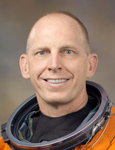

Lyndon B. Johnson Space Center
Houston, Texas 77058
|
National Aeronautics and Space Administration Lyndon B. Johnson Space Center Houston, Texas 77058 |
 |
Biographical Data |
||
Clayton C. Anderson
NASA Astronaut (FORMER)
PERSONAL DATA: Born February 23, 1959, in Omaha, Nebraska. He considers Ashland, Nebraska, to be his hometown. Married to the former Susan Jane Harreld of Elkhart, Indiana. They have two children: a son, Clayton "Cole," and a daughter, Sutton Marie. Anderson's mother, Alice J. Anderson, and father, John T. Anderson, are deceased. Susan's parents are Jack and Mary Harreld of Bella Vista, Arkansas. Recreational interests include: officiating college and high school basketball, participation in all sports, coaching youth sports, flying, reading, writing music, playing the piano/organ and vocal performance. As an undergraduate, he competed on the football, basketball and track teams.
EDUCATION: Graduated from Ashland-Greenwood High School, Ashland, Nebraska, 1977; graduated cum laude with a Bachelor of Science degree in Physics from Hastings College, Nebraska, in 1981; and received a Master of Science degree in Aerospace Engineering from Iowa State University in 1983.
ORGANIZATIONS: Member, Association of Space Explorers; Member, Hastings College (Nebraska) Board of Trustees; High School basketball official, Texas Association of Sports Officials; former men's college basketball official: Red River Athletic, Southern Collegiate Athletic, Heart of Texas, Lone Star and Texas/New Mexico Junior College Athletic Conferences; Johnson Space Center Employee Activities Association: Vice President of Athletics (1987 to 1992); Clear Lake Optimist Club, past president and vice president; Alpha Chi National Scholastic Honor Society, Hastings College, Hastings Nebraska (1980 to 1981).
SPECIAL HONORS: Tom Osborne Leadership Award, Leadership Hastings (2012); Judge, Miss Nebraska Pageant (2012); Ak-Sar-Ben Court of Honor, Knights of Ak-Sar-Ben Foundation (2011); NASA Spaceflight Medal (2008, 2011); NASA Exceptional Service Medal (2008, 2011); Russian Federation Medal for Merit in Space Exploration (2011); Charles Bessey Medal, University of Nebraska (2010), Outstanding Alumnus, Iowa State University (2008); Outstanding Alumnus, Hastings College (Nebraska) (2008); Honorary Doctorate degree from Hastings College (2004); Distinguished Alumnus Award, National Council of Alpha Chi (2001); NASA Quality and Safety Achievement Recognition (QASAR) Award (1998); NCAA National Christian College Basketball Championships Official (1997, 1998); Johnson Space Center (JSC) Certificate of Commendation (1993); Outstanding Young Man of America (1981, 1985, 1987) and Bronco Award Winner, Hastings College (1981).
NASA EXPERIENCE: Anderson joined the JSC in 1983 in the Mission Planning and Analysis Division, performing rendezvous and proximity operations trajectory designs for early space shuttle and International Space Station missions. In 1988, he moved to the Mission Operations Directorate (MOD) as a Flight Design Manager, leading the trajectory design team for the Galileo planetary mission (STS-34) while serving as the backup for the Magellan planetary mission (STS-31). In 1989, Anderson was chosen to be supervisor of the MOD Ascent Flight Design Section and, following reorganization, the Flight Design Engineering Office of the Flight Design and Dynamics Division. In 1993, he was named the Chief of the Flight Design Branch. From 1996 until his selection, Anderson held the post of Manager, Emergency Operations Center, NASA Johnson Space Center.
Selected as a Mission Specialist by NASA in June 1998, he reported for training in August of that year. Training included orientation briefings and tours, numerous scientific and technical briefings, intensive instruction in shuttle and International Space Station systems, physiological training, ground school to prepare for T-38 flight training as well as learning water and wilderness survival techniques.
Prior to being assigned to a spaceflight, Anderson served as lead for the Enhanced Caution and Warning (ECW) System development effort within the space shuttle Cockpit Avionics Upgrade (CAU) project. Previously, he was the Crew Support astronaut for International Space Station Expedition 4, providing ground support on technical issues in addition to supporting the crew families. Anderson also served as a space station Capsule Communicator (CAPCOM) and as the Astronaut Office Crew Representative for the space station electrical power system. In November 2002, Anderson completed training in the Extravehicular Activity (EVA) Skills program. He also served as backup Flight Engineer for International Space Station Expeditions 12, 13 and 14. A veteran of two space flights, Anderson has logged 167 days in space and 38 hours and 28 minutes of EVA in six spacewalks. He completed 5 months aboard the space station in 2007 and served aboard the STS-131 crew in 2010.
SPACE FLIGHT EXPERIENCE: In 2007, Anderson spent a 5-month tour of duty working aboard the International Space Staton. He launched to the space station on June 8, 2007, aboard Space Shuttle Atlantis with the crew of STS-117. Docking with the station on flight day 3, he replaced Suni Williams as the Expedition 15 Flight Engineer and also assumed the role of Science Officer for the expedition. During his 152-day tour of duty aboard the station, Anderson performed three spacewalks, two with crewmembers of STS-118, totaling 18 hours, 01 minute. During his "stage" EVA, Anderson jettisoned (disposed of) two pieces of space hardware, including the Early Ammonia Servicer (EAS), weighing in at more than 1,400 pounds and a piece of "onboard support equipment," creating space satellites "Nebraska 1" and "Nebraska 2." In addition, Anderson operated the robotic manipulator Canadarm2 to move the space station Pressurized Mating Adapter (PMA) 3 to the Node 1 nadir (Earth pointing) docking port in preparation for the arrival of Node 2, "Harmony," delivered by the crew of STS-120. Anderson returned home aboard Space Shuttle Discovery as a member of the STS-120 crew, landing at Kennedy Space Center (KSC) on November 7, 2007.
STS-131 on Space Shuttle Discovery (April 5 to April 20, 2010) executed a resupply mission to the International Space Station, launching at night from KSC. On arrival at the space station, Discovery's crew dropped off more than 27,000 pounds of hardware, supplies and equipment, including a tank full of ammonia coolant, new crew sleeping quarters, and three experiment racks. Anderson performed three EVAs during this mission and logged 20 hours and 17 minutes of extravehicular activity. On the return journey, the Multi Purpose Logistics Module (MPLM), Leonardo, inside Discovery's payload bay was packed with more than 6,000 pounds of hardware, science results and trash. The STS-131 mission was accomplished in 15 days, 02 hours, 47 minutes and 10 seconds and traveled 6,232,235 statute miles in more than 238 orbits.
In January 2013, Mr. Anderson retired from NASA to pursue other interests.
JANUARY 2013